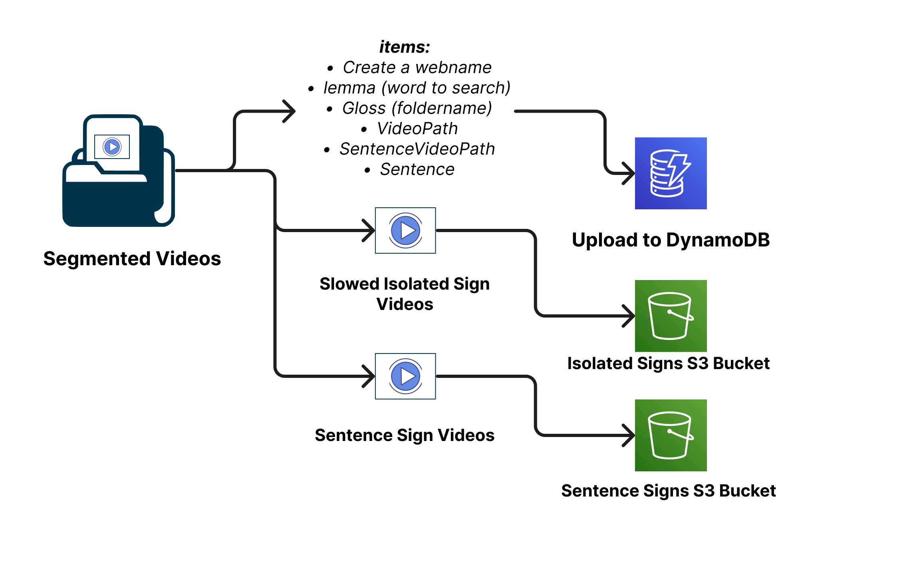

Data Processing and Upload Workflow#
The deployment process for the Text Search feature involves several key stages, all of which are meticulously outlined in the UploadDynamo Repository. The purpose of this deployment is to upload videos to the AWS platform, later retrieving them in a Web Dictionary. The process comprises the following phases:

Database Structure Definition and Video Storage:#
At the outset, the pipeline’s architecture and structure are defined, determining whether a relational or non-relational database will be employed. For this project, the choice is a non-relational database—DynamoDB from AWS. Additionally, the AWS S3 service is utilized for video storage. This combination of DynamoDB and S3 provides a reliable and scalable infrastructure for managing video data. For more details refer to S3 Documentation and DynamoDB Documentation
Lemma Extraction and Data Preparation:#
The first step in the deployment process involves running the scriptGloss.py script for data preparation and lemma extraction.
The scriptGloss.py script plays a vital role in simplifying video filenames for the AWS platform and the web dictionary. It focuses on identifying the core lemmas within video filenames, which are the different ways a sign is annotated (Glosses). For instance, signs like “CAMINAR-AVE” and “CAMINAR-PERSONA” refer to different signs but share the same underlying meaning, which is the lemma “caminar.” Similarly, variations like “ABURRIDO_1” and “ABURRIDO_2” should also be treated as the same lemma “aburrido.” This process of finding lemmas from the filenames is essential for organizing and categorizing signs effectively.
The script employs the spaCy library to extract these lemmas. spaCy helps transform words in the filenames into their base forms, making it easier for the computer to process them consistently. During this process, the script also keeps track of the frequency of each lemma, forming a kind of vocabulary list that highlights which lemmas appear most often.
The result of running the script is a valuable file named lemmaPUCP305.csv. This file serves as a crucial reference point, connecting the original words in video filenames to their respective lemmas and indicating how frequently they appear. This file lays the foundation for the DynamoDB table that will help us efficiently manage and retrieve signs during subsequent steps. For detailed instructions on how to execute this script, you can refer to the UploadDynamo Repository.
Adding TextSentences:#
The process of adding sentences to the lemma data is a crucial step that enhances the completeness and usability of the database. This stage builds upon the lemmaPUCP305.csv file generated earlier and enriches it by associating each gloss with its corresponding sentence where it came from.
Using the script adding_sentences.py, this task is automated to ensure consistency and accuracy. The script takes lemmaPUCP305.csv as input and extracts information from the ELAN annotation files. These annotation files provide translations and sentences associated with the glosses, contributing to a more comprehensive understanding of the context in which each sign is used.
The script performs a series of operations, such as parsing the file paths, locating ELAN annotation files, and extracting sentence annotations from them. These sentences are then linked to their respective glosses in the database. The result is a new file named lemmaPUCP305-reviewed.csv, which includes the original lemma data alongside the associated sample sentences.
This added layer of information enables the Dictionary LSP to show an example of use of the isolated sign in a sentence. For detailed instructions on how to execute this script, you can refer to the UploadDynamo Repository.
Slowing Down Videos:#
In the process of preparing the dataset for deployment, an important step is to optimize video content for smoother playback on the front-end. The script slowDownVideos.py serves this purpose by modifying the playback speed of individual video files, thus enhancing the user experience by ensuring that short videos can be effectively viewed without any issues.
However, please note that this Python script does not directly slow down videos but instead generates a shell (sh) script that will be used to apply the video slowdown using the FFmpeg tool.
Here’s how the process works:
Python Script (
slowDownVideos.py): This script is responsible for creating a shell script containing commands to modify the playback speed of the video files. The generated shell script will be namedslowDownVideos305.sh.Generated Shell Script (
slowDownVideos305.sh): The shell script contains a series of FFmpeg commands, each tailored to slow down a specific video file. By executing this shell script, you’ll effectively apply the required changes to the videos.
It’s important to note that the slowDownVideos.py script relies on information from a CSV file (lemmaPUCP305-reviewed.csv in this case) that includes details about the video files to be processed. Additionally, the video files themselves need to be present in the specified directory.
For detailed instructions on how to execute the slowDownVideos.py script, generate and execute the shell script, and fulfill any dependencies or requirements, please consult the documentation provided in the UploadDynamo Repository.
Uploading to S3 Buckets:#
The process of uploading videos to an AWS S3 bucket serves as a fundamental step in storing Isolated and Sentence Sign Language Videos. These videos are strategically stored in S3 to be seamlessly accessed by the Dictionary Web application whenever needed. This accessibility facilitates text search capabilities and the ability to display videos as part of the dictionary’s functionalities. The URLs of these videos stored in the S3 buckets are integrated into the DynamoDB table’s structure, enabling efficient retrieval and presentation within the website.
Here’s a high-level overview of the upload process:
Python Script
uploadS3boto3.py: This script serves as the main tool for uploading video files to the AWS S3 bucket. It utilizes the Boto3 library to establish a connection to AWS and interact with the designated S3 buckets.CSV Input (
lemmaPUCP305-reviewed.csv): The script relies on information from a CSV file that contains details about the video files to be uploaded. This CSV includes the video filenames, along with associated glosses or lemmas.S3 Buckets (isolatedsigns and sentencesigns): The videos are uploaded to two distinct S3 buckets: isolatedsigns for isolated signs and sentencesigns for sentences.
isolatedsigns Bucket: This bucket is used to store individual or isolated sign videos. The script uploads each video with its associated gloss or lemma as the video’s object name in the bucket.
sentencesigns Bucket: This bucket is used to store videos of sign sentences. Similar to the isolated signs, videos are uploaded to this bucket with their corresponding object names.
The uploadS3boto3.py script reads the CSV file, locates the video files, and then proceeds to upload each video to its designated S3 bucket. The script employs the Boto3 library’s functionality to handle the uploading process securely and efficiently.
For a comprehensive guide on how to execute the uploadS3boto3.py script, upload videos to the designated S3 buckets, and ensure all necessary prerequisites are met, please refer to the documentation provided in the UploadDynamo Repository.
Creating DynamoDB Table and Population:#
To streamline this process, a Python script named createItemsDynamo.py is provided. This script utilizes the Boto3 library, which enables interactions with AWS services from within Python code. The purpose of this script is to create an efficient batch upload mechanism for adding video-related data to the DynamoDB table.
The script reads essential video details from a CSV file, such as lemmaPUCP305-reviewed.csv. These details include the sign’s gloss, lemma, associated URLs for isolated and sentence videos stored in S3 buckets, corresponding text descriptions, and other metadata. Using the boto3 library, the script constructs and submits batch write requests to the DynamoDB table for efficient data insertion.
For comprehensive guidance on executing the createItemsDynamo.py script, uploading video-related data to the DynamoDB table, ensuring prerequisites are met, and integrating these details into your platform’s functionality, please refer to the documentation available in uploadDynamo Repository.